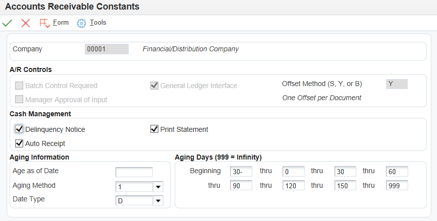

Immediate recognition of cash in the general ledger is an essential part of the accounts receivable process. To ensure early cash recognition, you can process receipts automatically to quickly apply payments from customers to their invoices. This method of processing receipts enables you to:
Immediately recognize cash in the general ledger regardless of whether the receipt is matched to invoices.
Store instructions for invoice matching at the customer and company level.
Define flexible selection criteria and sequencing specifications to reduce the number of invoices that are candidates to be reviewed.
Process unapplied receipts that were entered manually.
Reprocess receipts that were not successfully processed the first time.
There are ten steps to complete Automatic Receipts Processing, six for the initial set-up and an additional four for the processing, plus a further step to purge electronic receipts data. Below is a summary of each of the six initial setup steps. For further information on the automatic receipt processing steps please refer to E1: 03B: Automatic Receipt Processing in EnterpriseOne Accounts Receivable (R03B551, P03B121, P03B124, R03B50, R03B0041A).
Scope
This document is intended for users who are setting up and using the Automatic Receipt process in the EnterpriseOne Accounts Receivable module.
The first step is to ensure that the Accounts Receivable Constants are activated for automatic receipts.
Using fast path, access Accounts Receivable Constants by typing '3K', or navigate to Accounts Receivable Constants (P0000).
Inquire on each company you need to process automatic receipts for, and confirm the 'Auto Receipt' box is checked.
Click 'OK' to update any changes, or click 'Cancel' if no changes were required.

NOTE: Checking this option for default company 00000 does not cause the system to process receipts automatically for all companies. It is not necessary to activate this option for the default company in order to process receipts for other specific companies but you may still wish to activate this for Company 00000 as well.
Step 2: Define Algorithms (P03B52)
The next step is to review the algorithms used by the system to determine the method utilized to apply receipts to a customer's account. Algorithms instruct the system how to apply receipts to open invoices based on the amount of information you have from your customer. The system provides the following five algorithms, which use varying amounts of information to make a match to open invoices. Each algorithm is a batch version. These can be found from Define Application Algorithms (P03B52) or by searching for the individual algorithms within Work with Batch Versions (P98305W). You can use the existing standard algorithm versions, or create new versions based on the existing versions, by changing the processing options, selection criteria, and sequencing specifications.
Known Invoice Match With Amount (R03B50D) - Your customer provides you with information to identify an invoice and specifies the amount they want to apply to it.
Known Invoice Match Without Amount (R03B50E) - Your customer provides you with information to identify an invoice, but does not specify an amount to apply to it.
Balance Forward Match (R03B50B) - Your customer does not provide you with any specific information. You apply their receipt(s) to the invoice(s) in sequential order, oldest to newest or newest to oldest. The system uses the invoice net due date (DDJ) to determine the invoice sequence.
Invoice Selection Match (R03B50A) - Your customer does not provide you with any specific information. The system applies the receipt to a single invoice or a running total based on due date.
Combination Invoice Match (R03B50F) - Your customer does not provide you with any specific information. The system applies the receipt to a combination of invoices. You define how many invoices the system selects to find a matching pattern.
The system stores algorithms in the Receipt Application Algorithm Execution Lists table (F03B50).
NOTE:
Be sure to review each processing option under each tab for each algorithm you use. If these are not set correctly, this can cause the system to match receipts to open invoices incorrectly or not at all.
When you modify the data selection or data sequencing of an algorithm, you affect only the selection of receipts and the order in which the system selects them for processing.
Setting Processing Options for Known Invoice Match with Amount (R03B50D)
Processing options enable you to specify the default processing for programs and reports.
Apply Invoices Tab - These processing options specify how the system applies receipts to invoices with discounts and how the system manages overpayments and underpayments when the amount to apply is different from the open invoice amount.
Discounts Recognition Method - Specify whether to process all discounts or only those discounts that are earned. The G/L date of the receipt must be on or before the invoice discount due date for the discount to be earned. Values are:
Blank: Process all discounts.
1: Process earned discounts only.
Discount Reason Code - Specify the discount reason code that you want the system to use when discounts are taken. The discount reason code that you enter must exist in User Defined Code (UDC) 00/DE. You must also set up a corresponding AAI item (RKDxx) where xx is the reason code) for each discount code that you specify.
Grace Days - Specify the number of days to add to the discount due date to extend the eligibility of an available discount.
Underpaid Tolerance Amount - Specify the limit that the system uses to write off underpayments that occur at the invoice level. If the difference between the amount applied (Gross Amount field - AG) on the Electronic Receipts Input record (F03B13Z1) and the open amount of the invoice is equal to or less than the amount specified, the system writes off the remaining amount. If you work with multiple currencies, the write-off tolerance amounts for underpaid invoices are based on the currency code of the receipt, and not the currency code of the invoice or company. Set up a different version of this program for each receipt currency, and then specify the currency code in the data selection when you process automatic receipts using the Apply Receipts to Invoices program (R03B50).
Underpaid Reason Code - Specify the reason code to assign to write-offs that the system creates for underpaid invoices that do not exceed the tolerance amount. Valid write-off reason codes are defined in UDC 03B/RC. You must also set up a corresponding AAI item RAxx (where xx is the reason code) to specify the write-off account to use.
Processing Underpayments - Specify the method for processing underpaid invoices that exceed the underpaid tolerance amount. Values are:
Blank: Create a chargeback
1: Partially pay the invoice.
2: Create a deduction.
Underpayments Reason Codes
Chargeback Reason Code - Specify the reason code to assign to chargebacks that the system creates for underpaid invoices that exceed the tolerance amount specified for write-offs. Use this option only when you set the processing option for Processing Underpayments to 'blank'. Valid chargeback reason codes are defined in UDC 03B/CB. The system uses the offset account that was assigned to the invoice from which the chargeback originated.
Deduction Reason Code - Specify the reason code to assign to deductions that the system creates for underpaid invoices that exceed the tolerance amount specified for write-offs. Use this processing option only when you set the processing option for Processing Underpayments to '2'. Valid deduction reason codes are defined in UDC 03B/CR. You must also set up a corresponding AAI item RN to specify the deduction suspense account to use.
Overpaid Tolerance Amount - Specify the limit that the system uses to write off overpayments that occur at the invoice level. In the Electronic Receipts Input (F03B13Z1) table, if the difference between the amount applied (Gross Amount field - AG) and the open amount of the invoice is equal to or less than the amount specified, the system writes off the remaining amount. Enter the value as a positive amount. If you work with multiple currencies, the write-off tolerance amounts for overpaid invoices are based on the currency code of the receipt, and not the currency code of the invoice or company. Set up a different version of this program for each receipt currency, and then specify the currency code in the data selection when you process automatic receipts using the Apply Receipts to Invoices program (R03B50).
Overpaid Reason Code - Specify the reason code to assign to write-offs that the system creates for overpaid invoices that do not exceed the tolerance amount. Valid write-off reason codes are defined in UDC 03B/RC. You must also set up a corresponding AAI item RA xx (where xx is the reason code) to specify the write-off account to use.
Processing Overpayments - Specify the method for processing overpaid invoices that exceed the overpaid tolerance amount. Values are:
Blank: Create an unapplied receipt.
1: Overpay the invoice; the invoice will have a negative open amount that represents a credit for the overpayment.
Match Invoices - (This option was added as of release 8.11 SP1). Specify whether to match only invoice with an approved pay status. Valid values are:
Blank: Match all invoices.
1: Match only approved invoices.
Apply Receipts Tab - These processing options specify how the system manages overpayments and underpayments when the receipt amount is different from the total amount applied to invoices.
(Two fields to complete):
Underpaid Tolerance Amount - Specify the limit that the system uses to write off underpayments that occur at the receipt level. In the F03B13Z1 table, if the difference between the receipt amount (Check Amount field - CKAM) and the amount applied (Gross Amount field - AG) against invoices is equal to or less that the amount specified, the system generates a stand-alone write-off for the remaining amount.
NOTE:
If the receipt pays more than one invoice, the system generates a stand-alone write-off. If the receipt pays only one invoice, the system writes off that invoice and does not generate a stand-alone write-off.
If you work with multiple currencies, create a separate version of this program for each currency. The amount you specify in this processing option is currency specific and is based on the receipt currency.
Write-off Reason Code - Specify the reason code to assign to write-offs that occur as the result of an underpayment at the receipt level. Valid write-off reason codes are defined in UDC 03B/RC. You must also set up a corresponding AAI item RA xx (where xx is the reason code) to specify the write-off account to use.
(Three fields to complete):
Underpaid Receipt Processing - Specify the method for processing underpayments that occur at the receipt level and that exceed the tolerance limit specified. If the receipt pays more than one invoice, it generates a stand-alone chargeback or deduction. Values are:
Blank: Create a chargeback.
1: Create a deduction.
Chargeback Reason Code - Specify the reason code to assign to chargebacks that the system creates for underpayments that exceed the tolerance limit specified. Use this processing option only when you set the processing option for Underpaid Receipt Processing to 'blank'. Valid chargeback reason codes are defined in UDC 03B/CB. If the system generates a stand-alone chargeback, the G/L offset field is blank. If the receipt pays only one invoice and the system generates a chargeback, it uses the offset account that was assigned to the invoice from which the chargeback originated.
Deduction Reason Code - Specify the reason code to assign to deductions that the system creates for underpayments at the receipt level. Use this processing option only when you set the processing option for Underpaid Receipt Processing to '1' on the Apply Receipts tab. Valid deduction reason codes are defined in UDC 03B/CR. You must also set up a corresponding AAI item RN to specify the deduction suspense account to use.
Overpaid Tolerance Amount - Specify the limit that the system uses to write off overpayments that occur at the receipt level. In the F03B13Z1 table, if the difference between the receipt amount (Check Amount field – CKAM) and the amount applied (Gross Amount field – AG) against invoices is equal to or less than the amount specified, the system writes off for the remaining amount. Enter the value as a positive amount.
Overpaid Reason Code - Specify the reason code to assign to write-offs that occur as the result of an overpayment at the receipt level. Valid write-off reason codes are defined in UDC 03B/RC. You must also set up a corresponding AAI item RAxx (where xx is the reason code) to specify the write-off account to use.
Amount Match Tab - These processing options specify how the system manages duplicate invoice numbers, as well as whether the system uses the tolerance limits specified on the Apply Invoices tab to select invoices for matching.
Duplicate Invoice Match - Specify whether the system processes duplicate invoice numbers. If you do not specify a pay item in the F03B13Z1 table and the invoice has more than one pay item, the system considers all invoice records with the same document number as duplicate. Values are:
Blank: Do not process duplicate invoices. The system does not apply the receipt to any invoices if duplicates are found.
1: Use the amount to determine which invoice to pay. The system applies the receipt to the invoice with an open amount that is closest to the amount of the receipt.
Tolerance - Specify whether the system uses the tolerance amounts specified on the Apply Invoices tab to select invoice records to process. If you do not want to process invoices that exceed the tolerance amounts specified, you can reduce the processing time by using this option. Values are:
Blank: Do not use the tolerance amounts specified to select invoice records. The system processes all invoices, and then uses the tolerance amounts specified to determine whether to process the underpayment or overpayment.
1: Use the tolerance amounts specified. If the invoice amount exceeds the tolerance amounts, processing stops and the system does not apply the receipt amount to the invoice.
Match Priority Tab - These processing options specify how the system locates the invoice record in the Customer Ledger table (F03B11). The values are 1 - 6, where '1' specifies the highest priority and the system uses this search method first, then '2','3', and so on. The sorting processing options for priority on this tab are:
Invoice Number
Sales Order Number
Customer Reference Number
Statement Number
Shipment Number
Receipt Matching Reference
You do not have to complete all of the Match Priority processing options. If you complete more than one of these processing options, each must have a different value. If you leave a search method field blank, the system excludes that search method and uses only the other methods that you specify. If you leave all six fields blank, the system searches using all methods in the order listed.
Discount Tab - This processing option specifies how to process discounts when the open amount of the invoice, minus the discount, is less than the amount to be applied to the Electronic Receipts Input table (F03B13Z1). The system can adjust the discount to zero, rather than create a write-off for this difference.
Reduce Discount - Specify whether to adjust the amount of the discount when the receipt amount is greater than the open amount of the invoice, less the discount. For example, if the open amount of the invoice is 100.00 USD with a 5.00 discount, and you receive a payment for 97.00. Do you want the system to reduce the discount to 3.00 and fully apply the 97.00, or apply 95.00 and create a write-off for 2.00? Values are:
Blank: Do not reduce the amount of the discount taken; create a write-off for the difference.
1: Reduce the amount of the discount taken and do not create a write-off.
NOTE: If you are planning to set up and use the Known Invoice with Amount (R03B50D) algorithm, it is mandatory to specify values for invoice information such as Document Number (DOC), Document Type (DCT), Document Company (KCO) and Document Pay Item (SFX) in the F03B13Z1 table.
Setting Processing Options for Known Invoice Match Without Amount (R03B50E)
Apply Invoices Tab - These processing options specify how to apply receipts to invoices with discounts.
Discounts Recognition Method - Specify whether to process all discounts or only those discounts that are earned. The G/L date of the receipt must be on or before the invoice discount due date for the discount to be earned. Values are:
Blank: Process all discounts.
1: Process earned discounts only.
Discount Reason Code - Specify the discount reason code that you want the system to use when discounts are taken. The discount reason code that you enter must exist in User Defined Code (UDC) 00/DE. You must also set up a corresponding AAI item (RKDxx) where xx is the reason code) for each discount code that you specify.
Grace Days - Specify the number of days to add to the discount due date to extend the eligibility of an available discount.
Match Invoices - (This option was added as of release 8.11SP1). Specify whether to match only invoice with an approved pay status. Valid values are:
Blank: Match all invoices.
1: Match only approved invoices.
Apply Receipts Tab - These processing options specify how the system manages overpayments and underpayments when the receipt amount is different from the total amount applied to invoices.
(Two fields to complete):
Underpaid Tolerance Amount - Specify the limit that the system uses to write off underpayments. In the F03B13Z1 table, if the difference between the receipt amount (Check Amount field - CKAM) and the total open amount of the invoices paid is equal to or less than the amount specified, the system generates a stand-alone write-off for the remaining amount.
NOTE:
If the receipt pays more than one invoice, the system generates a stand-alone write-off. If the receipt pays only one invoice, the system writes off that invoice and does not generate a stand-alone write-off.
If you work with multiple currencies, create a separate version of this program for each currency. The amount you specify in this processing option is currency specific and is based on the receipt currency.
Write-off Reason Code - Specify the reason code to assign to write-offs that occur as the result of an underpayment at the receipt level. Valid write-off reason codes are defined in UDC 03B/RC. You must also set up a corresponding AAI item RA xx (where xx is the reason code) to specify the write-off account to use.
(Three fields to complete):
Underpaid Receipt Processing - Specify the method for processing underpayments that exceed the tolerance limit specified. Values are:
Blank: Create a chargeback.
1: Create a deduction.
NOTE: If the receipt pays more than one invoice, it generates a stand-alone chargeback or deduction.
Chargeback Reason Code - Specify the reason code to assign to chargebacks that the system creates for underpayments that exceed the tolerance limit specified. Use this processing option only when you set the processing option for Underpaid Receipt Processing to 'blank'. Valid chargeback reason codes are defined in UDC 03B/CB. If the system generates a stand-alone chargeback, the G/L offset field is blank. If the receipt pays only one invoice and the system generates a chargeback, it uses the offset account that was assigned to the invoice from which the chargeback originated.
Deduction Reason Code - Specify the reason code to assign to deductions that the system creates for underpayments. Use this processing option only when you set the processing option for Underpaid Receipt Processing to '1'. Valid deduction reason codes are defined in UDC 03B/CR. You must also set up a corresponding AAI item RN to specify the deduction suspense account to use.
Overpaid Tolerance Amount - Specify the limit that the system uses to write off overpayments. In the F03B13Z1 table, if the difference between the receipt amount (Check Amount field - CKAM) and the total open amount of the invoices paid is equal to or less than the amount specified, the system writes off for the remaining amount. Enter the value as a positive amount.
Overpaid Reason Code - Specify the reason code to assign to write-offs that occur as the result of an overpayment. Valid write-off reason codes are defined in UDC 03B/RC. You must also set up a corresponding AAI item RAxx (Where xx is the reason code) to specify the write-off account to use.
Match Priority Tab - These processing options specify how the system locates the invoice record in the Customer Ledger table (F03B11). The values are 1 - 6, where '1' specifies the highest priority and the system uses this search method first, then '2','3', and so on. The sorting processing options for priority on this tab are:
Invoice Number
Sales Order Number
Customer Reference Number
Statement Number
Shipment Number
Receipt Matching Reference
You do not have to complete all of the Match Priority processing options. If you complete more than one of these processing options, each must have a different value. If you leave a search method field blank, the system excludes that search method and uses only the other methods that you specify. If you leave all six fields blank, the system searches using all methods in the order listed.
Setting Processing Options for Balance Forward Match (R03B50B)
Apply Tab- These processing options specify how the system matches receipts to invoices with discounts.
Discount Recognition Method - Specify whether to process all discounts or only those discounts that are earned. The G/L date of the receipt must be on or before the invoice discount due date for the discount to be earned. Values are:
Blank: Process all discounts.
1: Process earned discounts only.
Discount Reason Code - Specify the discount reason code that you want the system to use when discounts are taken. The discount reason code that you enter must exist in User Defined Code (UDC) 00/DE. You must also set up a corresponding AAI item (RKDxx) where xx is the reason code) for each discount code that you specify.
Grace Days - Specify the number of days to add to the discount due date to extend the eligibility of an available discount.
Invoice Matching Mode - Specify which invoices the system selects for automatic receipt processing. Values are:
Blank: Use payor and customer. The system selects only those invoice records from the Customer Ledger table (F03B11) that have the same values as the corresponding fields on the receipt record in the Receipts Header table (F03B13). The fields that must have identical values are the Customer field (AN8) and Payor (PYR) field on the invoice record (F03B11) and the Address Number field (AN8) and Payor field (PYR) on the receipt record, respectively. For example, if the F03B11 invoice record has 1001 and 1002 in the Customer and Payor fields, respectively, the F03B13 receipt record must have the values 1001 and 1002 in the Address Number and Payor fields, respectively.
1: Use payor only. The system selects only those invoice records from the Customer Ledger (F03B11) that have the same value in Payor field (PYR) field as the value of the Payor field (PYR) on the receipt record in the Receipts Header (F03B13).
Receipt Open Amount - (This option was added as of release 8.12) Invoice documents with negative open amounts such as credit memos can cause the receipt open amount to be greater than the received check amount. This may occur when you have credit memo open amounts greater than the invoice open amounts being processed at the same time. Results may differ depending upon the order in which the report processes the documents from the Customer Ledger (F03B11). If this option is turned on, invoice documents with negative open amounts that cause the Receipt Open Amount to be greater than the Check Amount will not be processed. Valid values are:
Blank = Allow Receipt Open Amt to exceed Check Amt
1 = Do not allow Receipt Open Amt to exceed Check Amt
Setting Processing Options for Invoice Selection Match (R03B50A)
Matching Tab- These processing options specify whether the system matches the invoice based on the open amount, the amount minus the discount available, or the amount minus the earned discount. A discount is earned when the receipt date is equal or prior to the discount due date on the invoice. You must select at least one option to process Invoice Selection Match. The more options that you supply for the system to use in this algorithm, the better chance the system has for finding a match.
Open Invoice Amount - Specify whether the system ignores any discounts when applying receipts to open invoices. Values are:
Blank: Apply the receipt to the open invoice amount, less the discount amount. You must enter a value in either processing option 2 (Less Available Discount) or processing option 3 (Less Earnable Discount) if you use this value.
1: Apply the receipt to the open invoice amount and ignore discounts.
Less Available Discount - Use this processing option to apply the receipt to the open invoice amount, less the available discount. The system subtracts the available discount amount from the open invoice amount before it applies the receipt. Values are:
Blank: Apply the receipt to the open invoice amount and ignore any discounts. You must enter '1' for the Open Invoice Amount processing option if you select this value.
1: Apply the receipt to the open invoice amount, less the available discount.
Less Earnable Discount - Use this processing option to apply the receipt to the open invoice amount, less the earnable discount. The system subtracts the earnable discount amount from the open invoice amount before it applies the receipt. The G/L date of the receipt must be on or before the invoice discount due date for the discount to be earned. Values are:
Blank: Apply the receipt to the open invoice amount and ignore any discounts. You must enter '1' for the Open Invoice Amount processing option if you select this value.
1: Apply the receipt to the open invoice amount, less the earnable discount.
Underpaid Tolerance Amount - Specify the limit that the system uses to write off underpayments. If the difference between the receipt amount (Check Amount field - CKAM) in the Electronic Receipts Input table (F03B13Z1) and the total open amount of invoices paid is equal to or less than the amount specified, the system generates a stand-alone write-off for the remaining amount.
NOTE:
If the receipt pays more than one invoice, the system generates a stand-alone write-off. If the receipt pays only one invoice, the system writes-off that invoice and does not generate a stand-alone write-off. The limit that you specify applies to the running total of invoices, not each individual invoice.
If you work with multiple currencies, create a separate version of this program for each currency. The amount you specify in this processing option is currency specific and is based on the receipt currency.
Underpaid Reason Code - Specify the reason code to assign to write-offs that occur as the result of an underpayment. Valid write-off reason codes are defined in UDC 03B/RC. You must also set up a corresponding AAI item RAxx (where xx is the reason code) to specify the write-off account to use.
Overpaid Tolerance Amount - Specify the limit that the system uses to write off overpayments. In the F03B13Z1 table, if the difference between the receipt amount (Check Amount field - CKAM) and the total open amount of the invoices paid is equal to or less than the amount specified, the system writes off for the remaining amount. Enter the value as a positive amount.
Overpaid Reason Code - Specify the reason code to assign to write-offs that occur as the result of an overpayment. Valid write-off reason codes are defined in UDC 03B/RC. You must also set up a corresponding AAI item RAxx (Where xx is the reason code) to specify the write-off account to use
Apply Tab - These processing options specify how the system applies receipts to invoices, based on the options that you set on the Matching tab.
Processing Unearned Discounts - Specify the method for processing unearned discounts (discounts taken by the customer after the discount due date has passed). This processing option is valid only when you enter '1' for the Less Available Discount processing option on the Matching tab. Values are:
Blank: Allow unearned discounts.
1: Create a write-off for the unearned discount.
2: Create a chargeback for the unearned discount.
3: Partially pay the invoice; leave the invoice open for the discount amount.
4: Create a deduction
Reason Codes for Unearned Discounts:
Write-off Reason Code - Specify the reason code to assign to write-offs that the system creates for unearned discounts. Use this processing option only when you set the processing option for Processing Unearned Discounts to '1'. Valid write-off reason codes are defined in UDC 03B/RC. You must also set up a corresponding AAI item RAxx (where xx is the reason code) to specify the write-off account to use.
Chargeback Reason Code - Specify the reason code to assign to chargebacks that the system creates for unearned discounts. Use this processing option only when you set the processing option for Processing Unearned Discounts to '2'. Valid chargeback reason codes are defined in UDC 03B/CB.
NOTE: If the system generates a stand-alone chargeback, the G/L offset field is blank. If the receipt pays only one invoice and the system generates a chargeback, it uses the offset account that was assigned to the invoice from which the chargeback originated.
Deduction Reason Code - Specify the reason code to assign to deductions that the system creates for unearned discounts. Use this processing option only when you set the processing option for Processing Unearned Discounts to '4'. Valid deduction reason codes are defined in UDC 03B/CR. You must also set up a corresponding AAI item RN to specify the deduction suspense account to use.
Grace Days - Specify the number of days to add to the discount due date to extend the eligibility of an available discount.
Discount Reason Code - Specify the discount reason code that you want the system to use when discounts are taken. The discount reason code that you enter must exist in UDC 00/DE. You must also set up a corresponding AAI item (RKDxx where xx is the reason code) for each discount reason code that you specify.
Setting Processing Options for Combination Invoice Match (R03B50F)
Matching Tab - These processing options specify whether the system considers invoices with discounts and credit memos for matching.
Open Invoice Amount - Use this processing option to apply the receipt to the open invoice amount and ignore any discounts. Values are:
Blank: Apply the receipt to the open invoice amount, less the discount amount. You must enter a value in either processing option 2 (Less Available Discount) or processing option 3 (Less Earnable Discount) if you use this value.
1: Apply the receipt to the open invoice amount and ignore discounts.
Less Available Discount - Use this processing option to apply the receipt to the open invoice amount, less the available discount. The system subtracts the available discount amount from the open invoice amount before it applies the receipt. Values are:
Blank: Apply the receipt to the open invoice amount and ignore any discounts. You must enter '1' for the Open Invoice Amount processing option if you select this value.
1: Apply the receipt to the open invoice amount, less the available discount.
Less Earnable Discount - Use this processing option to apply the receipt to the open invoice amount, less the earnable discount. The system subtracts the earnable discount amount from the open invoice amount before it applies the receipt. The G/L date of the receipt must be on or before the invoice discount due date for the discount to be earned. Values are:
Blank: Apply the receipt to the open invoice amount and ignore any discounts. You must enter '1' for the Open Invoice Amount processing option if you select this value.
1: Apply the receipt to the open invoice amount, less the earnable discount.
Match by Exclusion - Use this processing option to determine which invoices are not being paid (excluded) and to apply the receipt to the remaining invoices. You set this processing option when the possibility exists that a significant percentage of open invoices are paid by one receipt. The system calculates the difference between the receipt amount and the total open invoice amount, and then attempts to find a combination match for this amount. If a match is found, the system applies the receipt to all invoices that are not part of that combination. For example, you have a receipt for 900.00 and these invoices:
100 for 50.00
102 for 150.00
103 for 200.00
104 for 500.00
105 for 30.00
Total = 930.0 The system calculates the total of 930.00 and searches for a 30.00 invoice or any combination of invoices that equal 30.00. When it finds the invoices that equal 30.00, it applies the receipt to the remaining invoices instead of adding each invoice to the next until the payment amount is reached. Values are:
Blank: Do not match by exclusion.
1: Match by exclusion. When using match by exclusion, consider sorting the invoices in descending order by invoice date so that the newest invoices enter the algorithm first.
Credit Memos Included - Specify whether to include credit memos in the matching process. Values are:
Blank: Do not include credit memos.
1: Include credit memos.
Apply Tab- These processing options specify how the system applies the receipt to the invoice.
Processing Unearned Discounts - Specify the method for processing unearned discounts (discounts taken by the customer after the discount due date has passed). This processing option is valid only when you enter '1' for the Less Available Discount processing option on the Matching tab. Values are:
Blank: Allow unearned discounts.
1: Create a write-off for the unearned discount.
2: Create a chargeback for the unearned discount.
3: Partially pay the invoice; leave the invoice open for the discount amount.
4: Create a deduction
Reason Codes for Unearned Discounts:
Write-off Reason Code - Specify the reason code to assign to write-offs that the system creates for unearned discounts. Use this processing option only when you set the processing option for Processing Unearned Discounts to '1'. Valid write-off reason codes are defined in UDC 03B/RC. You must also set up a corresponding AAI item RAxx (where xx is the reason code) to specify the write-off account to use.
Chargeback Reason Code - Specify the reason code to assign to chargebacks that the system creates for unearned discounts. Use this processing option only when you set the processing option for Processing Unearned Discounts to '2'. Valid chargeback reason codes are defined in UDC 03B/CB. If the system generates a stand-alone chargeback, the G/L offset field is blank. If the receipt pays only one invoice and the system generates a chargeback, it uses the offset account that was assigned to the invoice from which the chargeback originated.
Deduction Reason Code - Specify the reason code to assign to deductions that the system generates for unearned discounts. Use this processing option only when you set the processing option for Processing Unearned Discounts to '4'. Valid deduction reason codes are defined in UDC 03B/CR. You must also set up a corresponding AAI item RN to specify the deduction suspense account to use.
Grace Days - Specify the number of days to add to the discount due date to extend the eligibility of an available discount.
Discount Reason Code - Specify the discount reason code that you want the system to use when discounts are taken. The discount reason code that you enter must exist in UDC 00/DE. You must also set up a corresponding AAI item (RKDxx where xx is the reason code) for each discount reason code that you specify.
Performance Tab- These processing options specify the number of invoices allowed in the combination match. You can control how many invoices the system selects at a time and how many invoices to use in each combination.
Invoice Review Limit - Specify the number of invoices for the system to select when determining the invoice combinations, up to a maximum of 10. This processing option is used in conjunction with the Invoice Combination Limit processing option. For example, you might specify an invoice limit of 6 with a combination limit of 3. The system selects 6 invoices and attempts to locate a match by using different combinations of 3 invoices. If you leave this field blank, the system selects 10 invoices.
Invoice Combination Limit - Specify the number of invoices that the system allows in any single combination for evaluation. For example, you might specify an invoice limit of 6 with a combination limit of 3. The system selects 6 invoices and attempts to locate a match by using different combinations of 3 invoices. The number specified in this processing option cannot exceed the number specified in the Invoice Review Limit processing option. If you leave this field blank, the system combines invoices up to the Invoice Review Limit that you specified.
Step 3: Define Execution List (P03B50)
Once algorithms have been defined, you need to specify the algorithms the system uses and the sequence in which the system processes them during the automatic receipts process. The algorithms that the system uses and the order in which the system processes them might vary depending on the customer and their payment habits. After you define execution lists, you can revise them at any time prior to processing automatic receipts. For example, you can:
Change the sequence in which the system processes the algorithms in the list.
Change the version of the base method to be processed.
Add an algorithm to the list or remove an algorithm from the list.
To define an execution list:
Go to 'Define Execution Lists' (P03B50).
Here you can use the preset execution list called 'STANDARD' or you can create your own execution list. If you are creating your own list, add the algorithms in the order you wish the system to process them. You can use a single or multiple algorithms as required.
Click 'OK'
The system stores information about execution lists in the Receipt Application Algorithm Execution List table (F03B50).
NOTE: The 'STANDARD' version calls all algorithms. If you want to use only one algorithm, be sure to create a new execution list instead of changing the STANDARD version. For troubleshooting/test purposes, try creating a new execution list with a single algorithm using the standard ZJDE version. If this works, and invoices are matched, then add a further algorithm and so on.
Step 4: Verify Customer Master Setup (P03013)
Before receipts can be processed automatically for customers, you next need to select the 'Auto Receipt' option on each customer master (P03013) record. If a customer has unique payment habits which require a separate execution list, you can specify the execution list on the customer master record so that you can run a different set of algorithms against that customer's invoices. If customers share a generic execution list, this can be specified in a processing option for the Update Receipts Header program (R03B551) and there is no need to add this individually to each customer master record. Finally, while you are not required to specify a payment term to process receipts automatically, you might want to assign customers who process receipts automatically a unique payment term so that you can select them for processing and reporting purposes.
To verify Customer Master Setup
Go to 'Customer Master Information' (P03013).
Inquire on each customer and under the Invoices Tab, confirm the Auto Receipt box is checked.
If required, under the Invoices Tab verify the Auto Receipts Execution List (data dictionary item ARL) lists a specific execution list.
Click 'OK'.
Step 5: Map Data to the Electronic Receipts Input Table (F03B13Z1)
Once the system is set up for processing receipts, you need to upload receipt information to the Electronic Receipts Input table (F03B13Z1). You first need to map bank information to the corresponding fields in the F03B13Z1 table. The system then creates records in the Receipts Header (F03B13) and Receipts Detail (F03B14) tables from the F03B13Z1 table when you run the Update Receipts Header program (R03B551).
See Appendix B, "Mapping Fields for Automatic Receipts Processing," of the JD Edwards EnterpriseOne Accounts Receivable Implementation Guide for your specific release, for further information. If using multicurrency, you may also wish to refer to JD Edwards EnterpriseOne Multicurrency Processing Implementation Guide for more information on "Mapping Requirements for Processing Multicurrency Automatic Receipts".
Once you have mapped the fields, the data can be uploaded to the Electronic Receipts Input table (F03B13Z1) as outlined in How To Process Automatic Receipts (Auto Cash) and Troubleshooting Tips (R03B551, P03B121, P03B124, R03B50, R03B0041A). You can also revise and add individual electronic receipt records manually to the Electronic Receipts Input table (F03B13Z1) using Review Electronic Receipts (P03B121). This can be used to correct unprocessed receipts or to add a receipt for troubleshooting purposes.
NOTE: If you are planning to set up and use the Known Invoice with Amount (R03B50D) algorithm, it is mandatory to specify values for invoice information such as Document Number (DOC), Document Type (DCT), Document Company (KCO) and Document Pay Item (SFX) in the F03B13Z1 table.
For the Apply Receipts to Invoices UBE (R03B50) to match receipts to invoices, you need to populate the Document number (DOC) with the invoice number, and not populate the Generic Match field (GMFD) with it. This is because the GMFD field can be used for many different things (statement number, shipment number, sales order number, etc), and this may not match the invoice and receipt to the correct customer.
Step 6: Bank Account Setup
Company Bank Account Requirements
Depending on the information provided in the Electronic Receipts Input (F03B13Z1) table and in the Short Bank Account ID processing option located on the Default tab of the Update Receipts Header program (R03B551), you might need to enter a bank account record for the company’s bank (G/L Bank Account). There are 3 main scenarios:
If the F03B13Z1 record contains a G/L Bank Account ID (GLBA), the system ignores any information contained in the Home Bank Account (EHBK) and Home Bank Transit (EHTN) fields, and in the short bank account ID processing option, and updates the information to the bank account specified in GLBA. No further bank account set up is required.
If the Home Bank Account (EHBK) and Home Bank Transit (EHTN) fields contain a value, and GLBA is blank, the system uses the EHBK and EHTN to locate the short account ID of the G/L Bank and the G/L Bank Account Record (record type G) must exist in the Bank Transit Master table (F0030). This can be set up using G/L Bank Account (P0030G)
If GLBA, EHBK and EHTN are all blank in F03B13Z1, the system uses the value specified in the R03B551 processing option. No bank account set up is required.
NOTE: The system uses both the Home Bank Account and Home Bank Transit fields to locate the G/L Bank Account ID. If you enter a value in EHBK, you must enter a value in EHTN.
Customer Bank Account Requirements
It is not a requirement to set up bank account information for each customer for whom you process receipts automatically.
However, if you have information in the Customer Bank Account (CBNK) and Customer Bank Transit (TNST) fields of the Electronic Receipts Input table (F03B13Z1), the system uses it to locate an address book number from the Bank Transit Master table (F0030) to use for the Payor field (PYR) in the Receipts Header table (F03B13). The system attempts to retrieve the bank record for the payor (record type P) first, and then uses the bank record for the customer (bank type C).
If a bank account record does not exist, the system uses other criteria, such as the payor or the customer number on the invoice record, to update the Payor field.